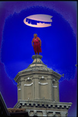

Photography Atelier
2002
Taught
by Holly Smith Pedlosky & Karen Davis
@ Radcliffe Seminars
Radcliffe Institute for Advanced Study, Harvard University
Alternate Thursdays, 10:30 am-1: pm, October 4, 2001-May
2, 2002

Lidia on the Carmini
The Photography
Atelier at Radcliffe Seminars is a year-long workshop of emerging
photographic artists which welcomes new members in the autumn.
Photography
Atelier 2002 is a unique portfolio-making course for artists in any
photographic medium, (black and white, color, slides or prints, print-making,
alternative processes, video, or electronic imaging), who feel ready
to produce an emotionally and intellectually focussed body of work.
In the spring, Atelier artists will produce a Website and a gallery
show of their work.
In this seminar
students will work with the photographic media of their choice to produce
a coherent collection of images. At each meeting, students bring their
work for group discussion. In addition instructors will teach how to
master techniques of composition in order to communicate multi-valent
photographic ideas, how to make photographic books, how to edit photographs,
digitize images, and design a website.
A
fully equipped black and white darkroom for processing and printing
black and white photos is available for a lab fee. Limited enrollment.
This Seminar
is open to intermediate to advanced students who feel ready to produce
an emotionally and intellectually focused body of work. Permission of
one of the instructors is necessary for new participants.
Holly Smith Pedlosky
(MFA School of the Art Institute of Chicago) is an artist, teacher, and
fine arts photographer on Cape Cod where she lives. She teaches workshops
on Cape Cod, in Venice, and on Lake Como for the Cape Cod Photo Workshops
and for the International Center of Photography in New York. She has an
international exhibition record, and has recently returned from a year
in Venice, where she had a Gladys Kriebel Delmas Foundation grant to photograph
and videotape casalinghe (traditional Venetian housewives) and their art
of hanging laundry. Holly shoots color slides which she prints digitally
with Adobe Photoshop.
Karen Davis
(MA University of Chicago) is a Cambridge photographer and book artist
who works with black and white media. She has an extensive exhibition
recor; her work has been exhibited at the Boston Public Library and
at Mass MoCA and is in the collection of the Houghton Rare Books Library
at Harvard University. Karen has work which will be featured in the
fall edition of Fotophile Magazine. Karen was a member of a community
group which received a 1999 grant from the Massachusetts Foundation
for the Humanities.
To contact the instructors:
Holly
Smith Pedlosky: telephone: 508.548.2069
hollyp@cape.com
or Karen Davis: telephone: 617.354.2713
karendavis@mediaone.net
for
catalogue and application form:
Radcliffe Seminars: telephone: 617.495.8600; fax: 617.496.0363
All
images on these pages are copyright © 2001 by
Holly Smith Pedlosky
Would you like to return
to the Main Page?
|